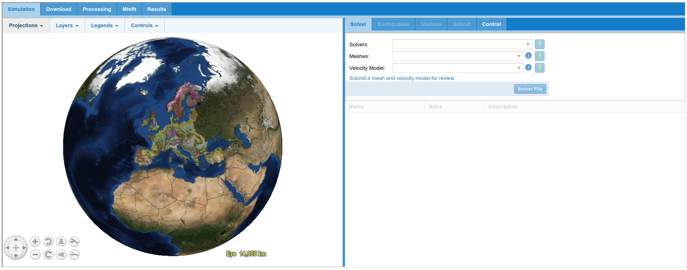

4. A tour of the VERCE platform¶
In this section we will introduce the different parts of the VERCE platform, and show the models and meshes that are already loaded into the VERCE portal.
4.1 Welcome & News tabs¶
The welcome tab of the portal gives a very brief overview of the portals uses, while the news tab gives details of recent significant earthquakes. Other news such as upcoming training events, and publications related to the VERCE platform may also be shown here.
4.2 Security tab¶
We have already used many of the features available in this tab in order to upload our proxy certificate. The main security page though gives an overview of how to register for and get certificated for the platform, as covered in section 3 of this guide. The main tools you need to be aware of are the ‘MyProxy tool’ (section 3.4.1) and the ‘Certificate’ upload tab (section 3.4.3).
4.3 Forward Modelling tab¶
The ‘Forward Modelling’ tab is the main feature of the portal, and it is from here that you can setup and run full waveform simulations, and analyse the obtained output products. This section is divided in five sub-tabs that allow the user to access the different steps of the simulation and analysis procedure.
Jobs can be run from the ‘Simulation’ tab shown in figure 4.1 below. On the right hand side of this panel, the code used for the simulations can be selected from the drop down menu ‘Solvers’: so far both a code for local/regional 3D simulations - SPECFEM3D_Cartesian (Peter et al., 2011; see Section 5) – or a code for regional/global 3D simulations – SPECFEM3D_GLOBE (Tromp, Komatitsch, and Liu 2008; see section 6) – can be selected. Then, existing pre-loaded mesh and associated velocity model for different areas in the world can be selected from the drop down menus ‘Meshes’ and ‘Velocity Model’ respectively. Earthquake sources and seismic stations can be selected from the catalogues that are pre-installed into the portal under the ‘Earthquakes’ and ‘Stations’ tabs respectively. This process is described in more detail later in section 5 and 6 of this guide.
Alternatively, you can add your own mesh and velocity model using the blue link below the drop down boxes in figure 4.1. You can then add your own earthquake focal mechanisms and station locations. Details on how to create and submit a more advanced bespoke job like this are given in section 8 of this guide.
The left hand side of the panel shows a summary map of the area you are running your model for, currently showing the default view of Europe. The map also shows details of existing geological maps, hazard maps and fault traces. The relative weight of these can be adjusted using the drop down menu from the layer info button in the top right of the map area.

Figure 4.1: The forward modeling interface ‘Simulation’ page.
From the ‘Download’ tab users can download observed seismograms from the EIDA data archive corresponding to a specific earthquake selected for simulations. These data cab be used in the subsequent procedure to calculate misfit with respect to synthetic seismograms. Details in section 7.
Moreover, both observed and synthetic seismograms can be processed before comparison using the features under the ‘Processing’ tab and quantitative misfit calculation can be performed in the section ‘Misfit’. All the results of simulations and analyses can be accessed from the ‘Results’ tabs. Details are reported in section 7 of this guide.
4.4 Provenance tab¶
This tab gives access to the provenance explorer GUI, which allows the methods assumptions and inputs that have lead to a given synthetic output to be easily summarized. An example of the provenance GUI is shown below (figure 4.2)
Figure 4.2: An example displayed from the Provenance Explorer GUI (taken for Atkinson et al 2016).
4.5 File Manager tab¶
The file manager tab gives a access to the files that are available to the user. The files are sorted by model run. Examples of using the functionality of this tab are given in section 7.
4.6 IRODS tab¶
The iRODS tab gives direct access to the iRODS data structure, and allows the data to be managed and potentially downloaded. Examples of using the functionality of this tab are given in section 7.
4.7 The Meshes and models already uploaded¶
Currently there are several meshes and velocity models pre-loaded for Italy, and a mesh pre-loaded for the Maule area of Central Chile. They can be used for running 3D simulations at local/regional scale with the code SPECFEM3D_Cartesion, as explained in section 5 of this guide.
The frequency to which the seismic wave-field can be simulated is controlled by the time step of the model, the spacing of grid points within the mesh and ultimately by the values of wave velocities in the corresponding model. For this reason, there is a maximum frequency (or minimum period) of waveform that a given pair of mesh and velocity model can support. This minimum period (maximum frequency) resolvable is shown below (figure 4.3) for each of the combinations mesh-wavespeed model currently available in the VERCE portal.
Other details of these meshes such as the suggested time step (suggest DT) to make each model stable, the number of points in the mesh (Num. of HEX), and the approximate time that a 1 minute simulation would take if it was run on 100 cores (CPU time) are shown in figure 4.4. The UTM zone for each of the meshes is also shown as this should be specified to run the simulation and can be useful when using the output data.
Finally figure 4.5 gives details of the velocity models that are uploaded, along with the meshes, to the VERCE portal. The minimum and maximum P-wave and S-wave velocities are given as these are required to calculate the grid spacing and time step needed to resolve a given frequency of seismic wave.
{kind=link}
Figure 4.3: The mesh and velocity model combinations currently available through the VERCE portal, and the period to which the wave-field can be resolved in each of these mesh-model combinations.
{kind=link}
Figure 4.4: Details of the meshes currently available through the VERCE platform.
{kind=link}
Figure 4.5: Details of the velocity models that are currently available through the VERCE platform.